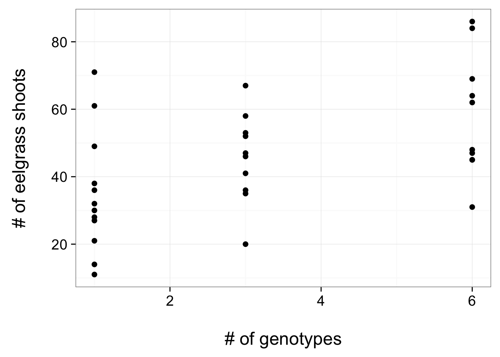
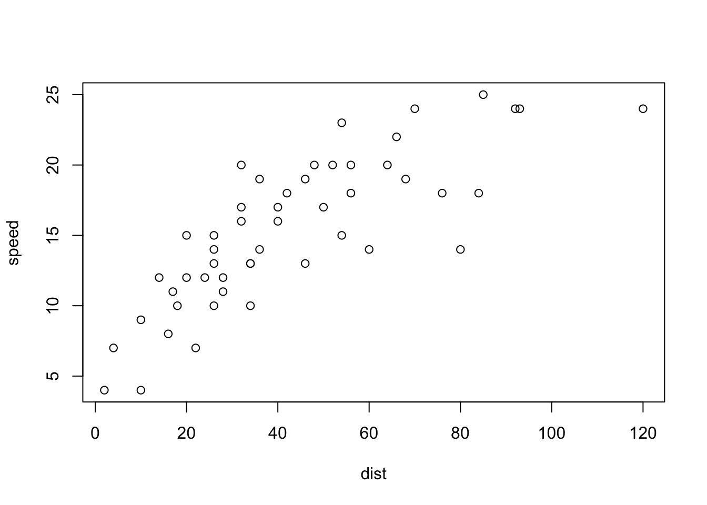
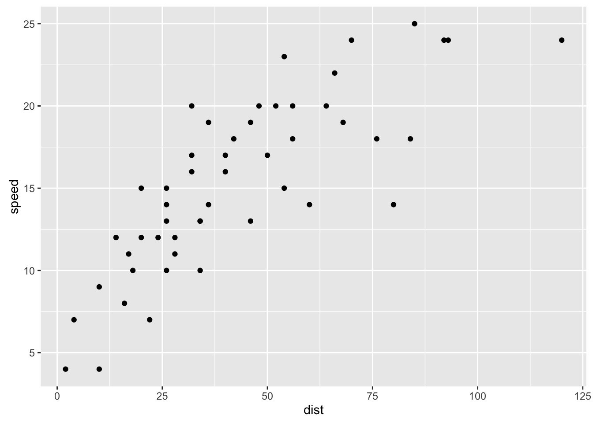
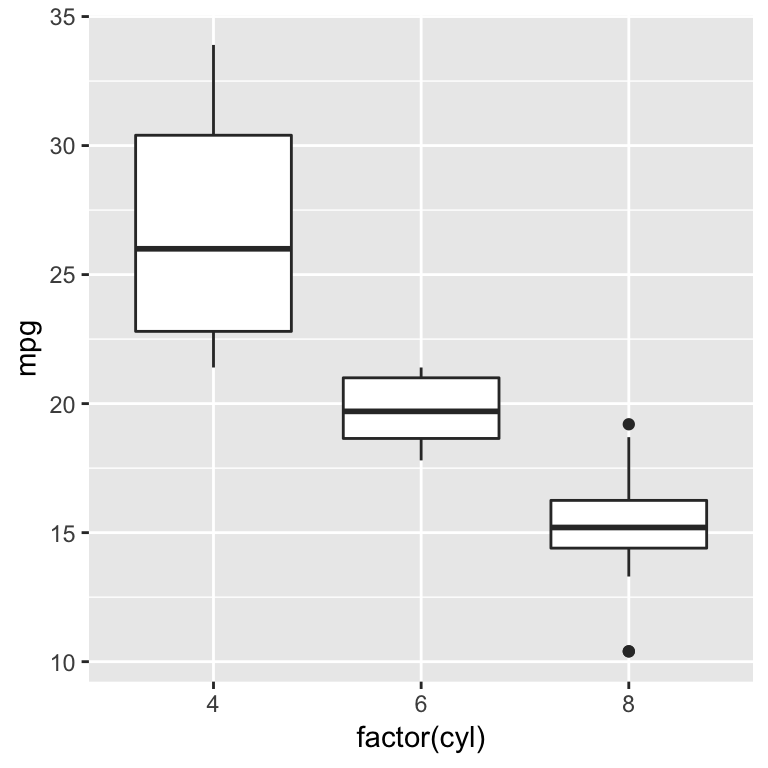

Jarrett Byrnes
UMass Boston
https://biol607.github.io/
Second, Some Old Technology

- Green: Party on, Wayne
- Red: I fell off the understanding wagon
- Blue: Write a question/Other
Outline for Today
- What are we doing here?
- Who are we?
- How will this course work?
- A Philosophy of answering scientific questions with data
- R!
Computational
#subset consumptionData into mixed diet treatments only (mixed diet BOX #'s are multiples of 5)
mixedData<-consumptionData[consumptionData$BOX %% 5 == 0,]
mixedData$delta<-mixedData$ADD_WT - mixedData$REM_WT
mixedData$rate<-mixedData$delta/mixedData$days
#reshape to get species-specific consumption rate table
mixed.summary<-ddply(mixedData,.(BOX,SP_CODE),function(x){
data.frame(CONSUMPTION_RATE=mean(x$rate,na.rm=TRUE))
})
#############fit linear models (not including consumption--see below)
LMtestChange <- lm(formula = TEST_CHANGE ~ TREATMENT, data = expData, na.action = na.omit)
Code Forces You to Be Explicity About Theory
Computational
#subset consumptionData into mixed diet treatments only (mixed diet BOX #'s are multiples of 5)
mixedData<-consumptionData[consumptionData$BOX %% 5 == 0,]
mixedData$delta<-mixedData$ADD_WT - mixedData$REM_WT
mixedData$rate<-mixedData$delta/mixedData$days
#reshape to get species-specific consumption rate table
mixed.summary<-ddply(mixedData,.(BOX,SP_CODE),function(x){
data.frame(CONSUMPTION_RATE=mean(x$rate,na.rm=TRUE))
})
#############fit linear models (not including consumption--see below)
LMtestChange <- lm(formula = TEST_CHANGE ~ TREATMENT, data = expData, na.action = na.omit)
Coding is power
Computational
#subset consumptionData into mixed diet treatments only (mixed diet BOX #'s are multiples of 5)
mixedData<-consumptionData[consumptionData$BOX %% 5 == 0,]
mixedData$delta<-mixedData$ADD_WT - mixedData$REM_WT
mixedData$rate<-mixedData$delta/mixedData$days
#reshape to get species-specific consumption rate table
mixed.summary<-ddply(mixedData,.(BOX,SP_CODE),function(x){
data.frame(CONSUMPTION_RATE=mean(x$rate,na.rm=TRUE))
})
#############fit linear models (not including consumption--see below)
LMtestChange <- lm(formula = TEST_CHANGE ~ TREATMENT, data = expData, na.action = na.omit)
Repeatable Research
Data (acquisition)
How do I get good data here?
Data (maintaince)

Analysis (philosophy)

Analysis (visual)

Analysis (model)
##
## Call:
## lm(formula = shoots ~ treatment.genotypes, data = eelgrass)
##
## Residuals:
## Min 1Q Median 3Q Max
## -27.473 -10.723 -1.299 8.955 35.701
##
## Coefficients:
## Estimate Std. Error t value Pr(>|t|)
## (Intercept) 30.664 5.324 5.760 2.73e-06 ***
## treatment.genotypes 4.635 1.401 3.308 0.00245 **
## ---
## Signif. codes: 0 '***' 0.001 '**' 0.01 '*' 0.05 '.' 0.1 ' ' 1
##
## Residual standard error: 16.39 on 30 degrees of freedom
## Multiple R-squared: 0.2672, Adjusted R-squared: 0.2428
## F-statistic: 10.94 on 1 and 30 DF, p-value: 0.002449
for Biology

for Biology
SCIENCE FIRST!
What is your model(s)?
THEN decide on statistical approach
Can you get data to paramaterize that model?
How does biology inform your modeled results?
Course Goals
- Learn how to think about your research in a systematic way to design efficient observational & experimental studies.
- Understand how to get the most bang for your buck from your data.
- Make you effective collaborators with statisticians.
- Make you comfortable enough to learn and grow beyond this class.
Who are You?
Name
Lab
Brief research description
Why are you here?
Outline for Today
- What are we doing here?
- Who are we?
- How will this course work?
- A Philosophy of answering scientific questions with data
- R!
Lecture and Lab
- T/Th Lecutre on Concepts
- Occasional Paper Discussion
- Th Lab (which will cover some homework problems!)
Readings for Class: Grolemund & Wickham

Grolemund, G., and Wickham, W. 2016. R for Data Science.
http://r4ds.had.co.nz
Problem Sets
- 40% of your grade
- “Adapted”" from Whitlock and Schluter
- Will often require R
- Complete them using Rmarkdown
Midterm
Advanced problem set
Due Nov 4th
20% of your grade
Outline for Today
- What are we doing here?
- Who are we?
- How will this course work?
- A Philosophy of answering scientific questions with data
- R!
Our Approach to Data Analysis
Data from Reusch et al. 2005 PNAS
Start with a Question

Does seagrass genetic diversity increase productivity?
Build an Understanding of the System
Literature
Observation
Disciplinary History
Construct a Causal Model of the System

This is your DATA GENERATING PROCESS
Construct a Causal Model of the System

Big Picture DATA GENERATING PROCESS
Construct a Causal Model of the System
What is your ERROR GENERATING PROCESS?
Construct a Causal Model of the System

What can you isolate?
Collect the Data to Best Estimate & Test the Model
1
Genotype
3
Genotypes
6
Genotypes
Look at Your Data

Fit a model(s), chosen to suit data & error generating process!
Analysis!

Build Open Reproducible Research
Many Methods of Sharing Data, Methods, and Results Beyond Publication
GitHub - public code repository
FigShare - share key figures, get a doi
Blog - open ‘notebook’
Dryad or Other Repository - post-publication data sharing
Outline for Today
- What are we doing here?
- Who are we?
- How will this course work?
- A Philosophy of answering scientific questions with data
- R!
What is R?
A programming language uniquely developed for statistical analysis
Why R?
- Free
- Huge growing community
- Packages to do almost anything
- Makes reusable research easy
- C-based language
- Syntax naturally matches analytical thinking
What is R Studio?

- Cross-Platform Graphical User Interface for R
- It is not R
What do you see?

The Console and Math
## [1] 2
You try - different mathematical operators
Everything is an Object
## [1] 2
You try - what can you save as an object?
Functions Work on Objects
## [1] 0.9092974
How to get help for a function
?cos
help(cos)
??'cosine function'
Lots of Object Types - like Data!
head(cars, n=3) #note the n= argument!
## speed dist
## 1 4 2
## 2 4 10
## 3 7 4
Try looking at all of cars and names(cars)
Graphics are a Snap
plot(speed ~ dist, data=cars)

Look at ?plot to see other arguments to change appearance
Installing Packages

Installing Packages

Installing Packages
You can also install packages from the command line.
install.packages('ggplot2', repos='http://cran.case.edu/', dependencies=TRUE)
Using one of the above methods, install the package ggplot2 and its dependencies now.
Using a Package
library(ggplot2)
qplot(dist, speed, data=cars)

You Try It
- Load ggplot2 and look at the mtcars data set
2.Look at the qplot help file & demos
- Make two plots (ggplot or plot)
